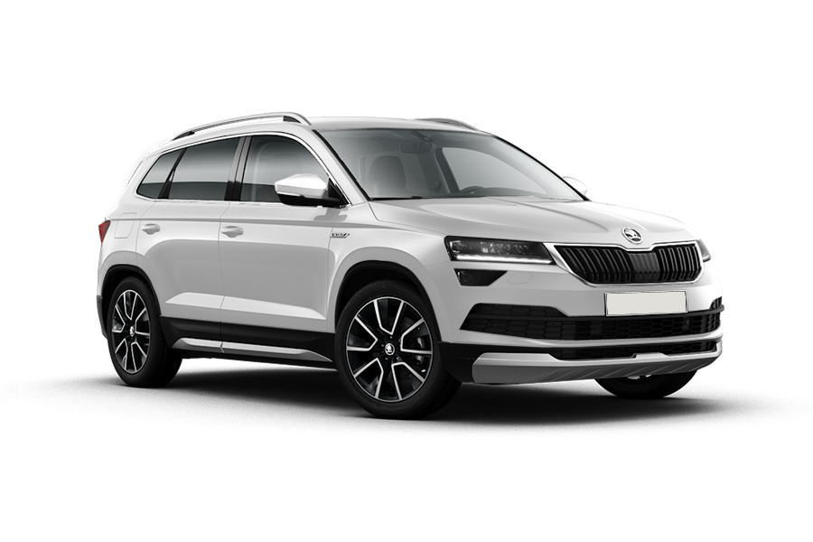
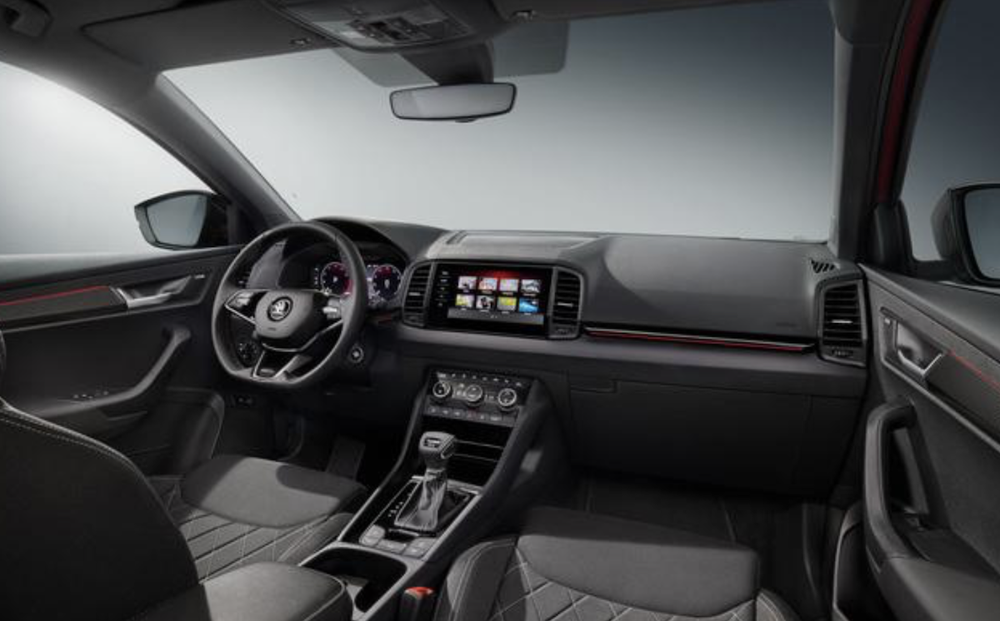

Skoda Karoq
Skoda Rapid - это компактный седан, представленный чешским производителем Skoda в 2012 году. Автомобиль предлагает привлекательный дизайн, высокую экономичность и удобство использования.
Стильный внешний вид автомобиля имеет гармоничную форму кузова, агрессивную переднюю часть и подчеркнутые боковые линии. Размеры Rapid составляют 4483 мм в длину, 1706 мм в ширину и 1461 мм в высоту, а колесная база составляет 2602 мм. Багажник имеет вместимость 550 литров.
Внутреннее пространство обеспечивает комфорт для пяти пассажиров. Качество отделки высокое, а материалы долговечны и приятны на ощупь. Опционально доступны функции, такие как климат-контроль и подогрев сидений.
Среди технических особенностей можно отметить широкий диапазон двигателей, включая бензиновые и дизельные моторы объемом от 1,2 до 1,6 литров. Мощность двигателей варьируется от 75 до 122 л.с. Трансмиссия может быть как механической, так и автоматической./p>
Skoda Rapid является отличным выбором для тех, кто ищет экономичный и комфортный автомобиль с качественной отделкой и удобными техническими характеристиками.
Конечно, вот пять ссылок на видео о Skoda Rapid:
-
Таблица комплектаций
Комплектация Объем двигателя Количество л.с. Active 1.4 MPI 150 л.с. Ambition 1.4 MPI 150 л.с. Style 2.0 TSI 223 л.с.